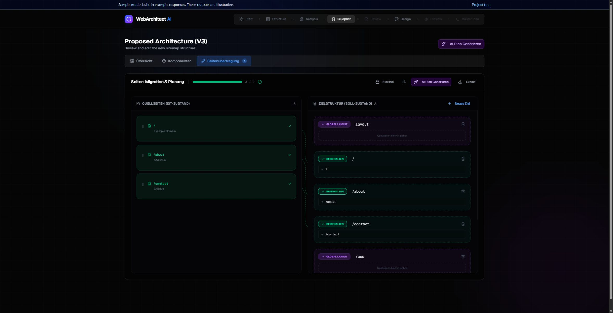

Make the migration
reviewable.
An existing website is more than a list of URLs. Web Architect AI helps turn its structure and content into decisions you can inspect, edit and carry into implementation.
Built by Jonas Fendel. TypeScript, Next.js, Puppeteer and configurable LLM workflows. An experimental local workbench.
Try the interactive guide Run the workbench locallyEvery proposed change stays visible. A draft is a starting point for a decision.
Follow one small migration.
A fictional studio site. All content and results here are hand-authored sample data; this guide makes no model calls and does not crawl websites.
Understand what already exists.
The workbench extracts navigation, content, media and page signals. Similar pages can be grouped before an AI workflow proposes a migration.
In this guide, the source is a three-page fictional studio website. Select a page to see its content purpose.
Introduces the studio and its services, with a clear route to contact.
Keep the decision with the human.
Review the proposed target paths and content roles. The real workbench supports page mapping, clustering and content review.
This sample proposes renaming the About page. Edit its path below; the exported draft will reflect your decision.
Use a path beginning with /, such as /studio or /about.
The draft proposes /about to /studio. Review the redirect before shipping.
- Home
- Service overview
- About
- Studio story and approach
- Contact
- Contact details and enquiry
Leave with a concrete draft.
The workbench produces page and component specifications, design directions, HTML mockups and implementation plans. Generated outputs still need engineering review.
This guide exports a small JSON blueprint. It is an illustrative review artifact, not a production migration.
Inside the actual workbench.
The guide above uses its own small fictional example. This screenshot shows the running application with its built-in sample responses.

A local workflow with explicit review points.
Puppeteer crawler and page extraction
Parallel critique and migration planning
Editable mappings, content and specifications
Design drafts and implementation artifacts
Why local storage? Sessions and assets stay in the local workspace. It keeps the prototype inspectable and easy to export; it is not a multi-user hosted service.
Why staged AI workflows? Critique and migration can run in parallel, while component and page specifications depend on the reviewed structure. Models are configurable by stage.
What this project demonstrates.
Full-stack workflow design, website extraction, configurable LLM orchestration and human review of generated artifacts. It does not demonstrate completed production migrations, autonomous deployment or a validated benchmark of AI quality.
The default local sample mode uses built-in responses. Provider-backed execution requires your own configuration; real crawling should be limited to websites you own or are authorised to inspect.